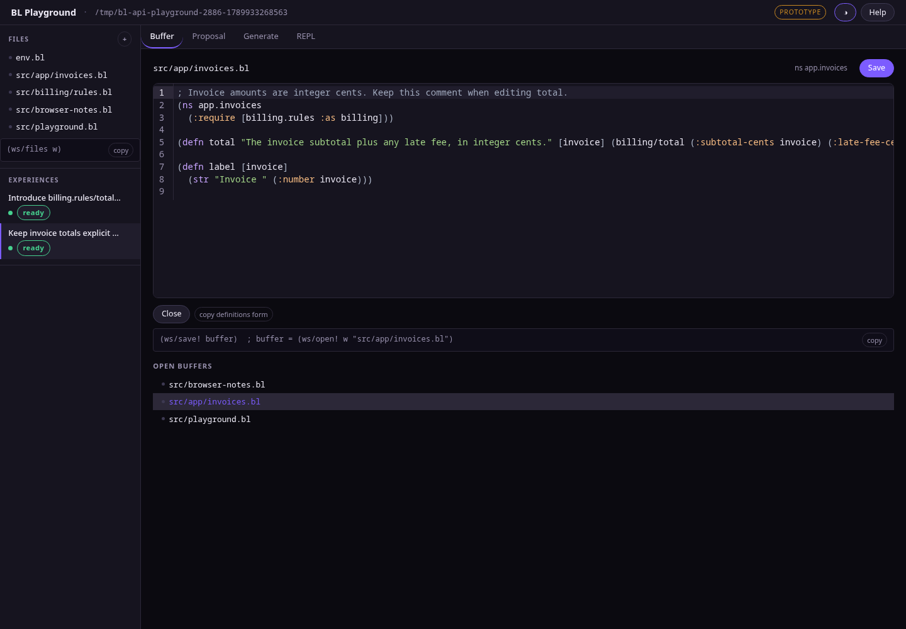
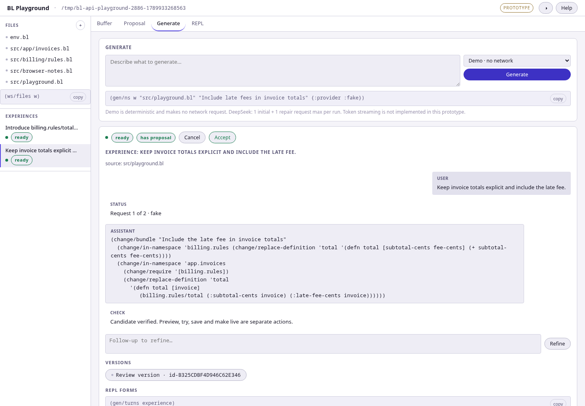
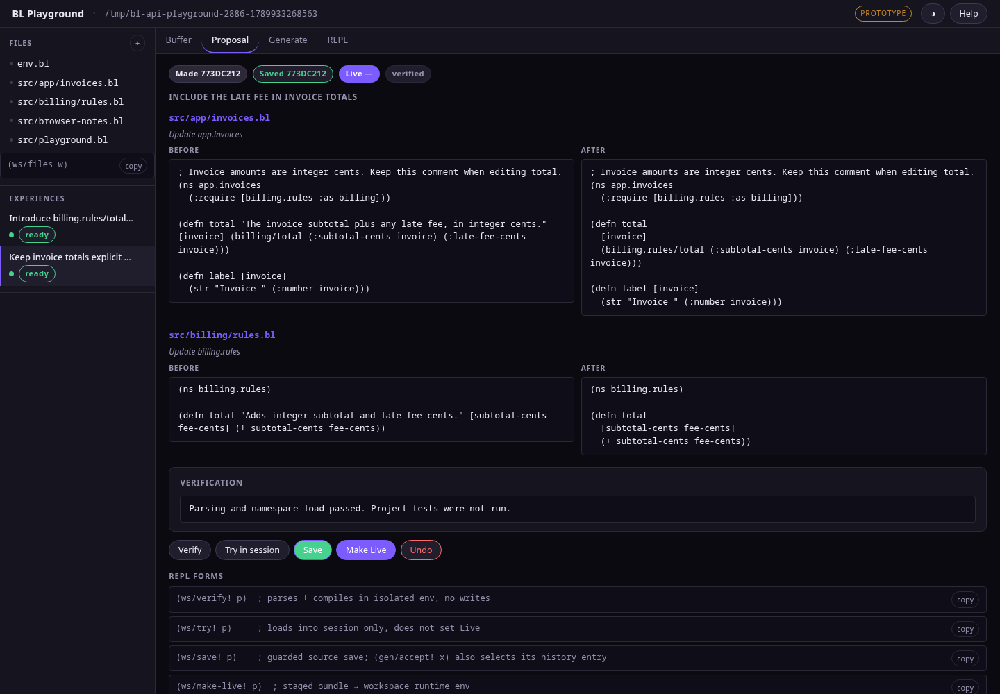
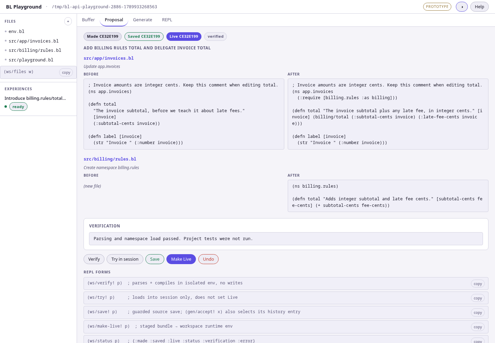
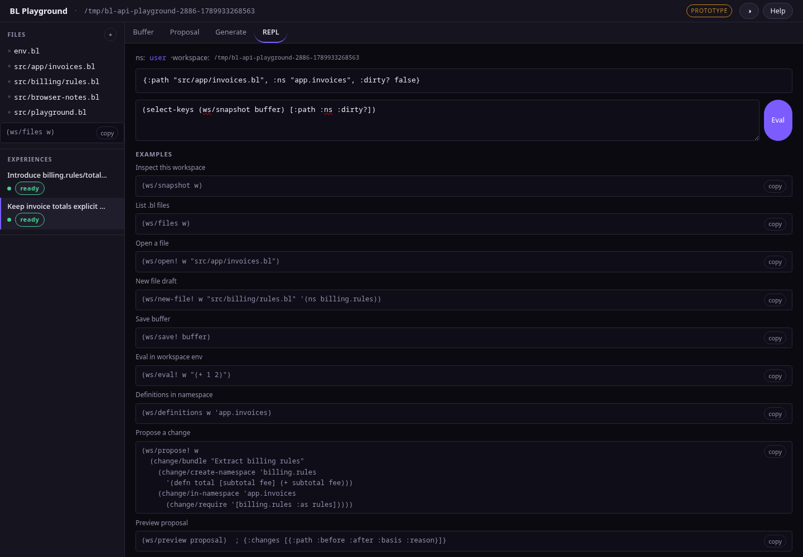

One surface. Every form has a story.
The fuller interface is the BL Playground under research/workspace-spike/play, not the compact bl repl page. It already links files, generated experiences, proposals and a workspace REPL through real handles. This revision connects them on one work surface: select a form, ask for a change, follow a real timeline, inspect the diff beside the source, and evaluate the highlighted form without leaving it.
Real CodeMirror editing, explicit saves, independent Made / Saved / Live revisions, inspectable BL values, two palettes and honest prototype limits.
Source, generation timeline and proposal review share one context and source revision. CIDER-style form evaluation is visible first, explicit second; technical forms move into optional context.
Verification is a namespace-load check, not the project test suite. “Live” is the playground runtime, not a deployed process. A mock layout here is a proposal, not a working feature.
Scope: actual prototype renderer play/ui.bl, client play/ui-client.js, palettes play/ui.css. The five distinct screenshots below are existing browser captures from evidence/; diagrams marked “proposed” are speculative.
Buffer, generation and diff become one place.
The present rail chooses a file or experience and four tabs choose Buffer, Proposal, Generate or REPL. Those choices often describe the same work at different stages. The proposed surface uses a stable working context: source at the center, a timeline attached to its basis and a selected proposal diff unfolding in that timeline. The console is a drawer connected to the selected form, not a parallel destination.

v2 · review
(+ (:subtotal invoice) (:late-fee invoice)))
+ (billing/total invoice)
total / line 4
Made · verified
Live · not published
Source takes priority. An in-memory draft stays a draft and survives navigation; Save file is explicit.
Intent names a file/form and exact source revision. A provider disclosure appears before starting.
Timeline shows ordered events and candidate versions. An older event opens a read-only source/diff lens; the current draft stays untouched.
Review diff in place, verify honestly, save source and make live as separate decisions.
One surface, not a wall
Source remains visible. Timeline and diff can widen, collapse or become the focused main region; rail and inspector become drawers on narrow tiles. Returning restores the exact selected form, candidate version and scroll position. No fake OS header bar on niri.
The object behind it
One working context owns the active buffer/draft revision, selected form, experience, candidate version, timeline position and console binding. Explicit IDs connect them; a clicked row never silently binds the REPL or changes a draft.
The deeper move: the selected form is a thread of provenance—what you wrote, what you asked to change, what the candidate changed, and what you actually evaluated. This is more useful than putting three old tabs side by side.
Point at a form. Know what will run.
Editing begins as an ordinary text editor, with a welcoming Edit · type freely badge. Point at any complete form to preview its exact range; click to pin it. Esc enters Explore, a selection-first mode with visible directional help; i returns to typing. The highlighted form is the same target for navigation, evaluation and a future generation scope—never three guesses about what “current” means.
Evaluation caution: this example contains lexical base and invoice; a standalone workspace eval may fail without those bindings. The interface shows the error and an explicit “Evaluate enclosing top-level form” alternative. Hover and keys alone never execute it.
| Key in Explore | Move | At a boundary |
|---|---|---|
| Ctrl+J | First child | Next sibling if no child; otherwise stay |
| Ctrl+K | Parent | Next top-level sibling if no selectable parent; otherwise stay |
| Ctrl+H | Previous sibling | Previous ancestor sibling → deepest last child; otherwise stay |
| Ctrl+L | Next sibling | Next ancestor sibling → deepest first child; otherwise stay |
| Ctrl+Enter | Evaluate exactly highlighted form | No target or incomplete form → explain, do not run |
Browsers commonly reserve Ctrl+H/J/K/L for history, downloads, search and the address bar. The native WebKitGTK host is the target for those chords, subject to real delivery tests. Browser users get g then h/j/k/l in Explore, remapping, and visible controls. No core action relies only on a captured browser shortcut.
Invitation, not magic
Hover the smallest complete form. Whitespace, comments and discarded forms never guess a nearby eval target. After a keyboard move, a stationary pointer cannot steal the selection. Delimiters choose their owning collection.
Beginner-friendly normal mode
Edit remains normal typing; Esc enters Explore with an on-screen map and accessible cue, i returns to Edit. A fallback textarea still edits when the syntax parser cannot load. Shortcuts do not fire inside prompts or dialogs.
A form has a revision
The exact highlighted slice and draft revision go to a server command that validates and re-reads it before execution. No implicit save; no “eval nearest line.” CodeMirror UTF-16 offsets need conversion to BL reader codepoint offsets.
The editor deserves the height
Give code the available viewport, retain line numbers and an optional width guide. The rail holds open-file identity; source is not followed by a duplicate buffer list. Results and timeline can collapse without destroying context.
Precise edge cases, examples and implementation tests: Form-first interaction ↗
Generation is a timeline of decisions.
There is no separate Generate destination. The selected source form or file opens an intent composer next to the code. Starting a run appends a timeline below the source: what was asked, which revision the provider saw, what actually completed, what passed verification, and which candidate the user reviewed. A follow-up adds a version to the same story; it never replaces an earlier one.

“Include late fees…” · file basis rev 4
Response received. Raw constructor available in details.
Changed total; added billing rules. Open diff here ↓
Parse + namespace load passed · tests not run
Review v1, refine, save source or make live separately.
Show exact file/revision and provider. Demo sends nothing; DeepSeek reveals sent content and possible cost. An unsaved draft is not included until backend support exists.
Queued, calling, cancelled, failed and completed come from authoritative events. A spinner is not a fabricated token-by-token transcript.
A candidate event links its prompt, source basis, changed files, verification receipt and inline diff. Follow-up creates v2; v1 remains inspectable.
Save and Make Live append separate decision receipts. Reload restores ordering and previous versions, not just the last assistant message.
Current data seam
The prototype exposes turns, versions and status snapshots. It has no durable typed event IDs or true token stream; gen/ns accepts a source path. A timeline reconstructed only from DOM changes would lie after reload and a run on a dirty buffer might use stale disk source.
Implementation prerequisite
Persist ordered event IDs, source basis, provider/run identity, candidate version and explicit phase. Decide whether a frozen unsaved draft is supported; until then label generation “Saved source only.” A cancelled late reply must never become the active candidate.
One-up: the timeline is a navigable record of intent and evidence, not a chat transcript. Selecting an older event opens a labeled, read-only history lens for its source and diff; “Return to current draft” brings you back without changing a byte. The form, file and candidate remain linked across time. The selected form is the connective tissue across all three tasks.
The diff is the next chapter, not another tab.
Select candidate v2 in the timeline; its changed-file list expands directly beneath that event. The source pane and diff share a file and form breadcrumb. Clicking a hunk locates its source; widening the review temporarily prioritizes the diff, then returns to the same selected version and scroll position. No competing “active proposal” from an unrelated experience. Older versions open a read-only history lens with a visible return to the current draft.


Generated from the captured basis. Review below before any write.
+ (defn total [invoice] (billing/total invoice))
Which source was reviewed?
The diff compares v2 with the frozen basis from its request, not current disk content. A dirty buffer or external change triggers a named conflict/compare path before saving. The current generator only takes a path; draft-scoped generation requires backend support.
Every action has a distinct receipt
Verify means parse + namespace load, not tests. Try is session evaluation without publication. Save writes basis-guarded files and, for generated work, may select the accepted history pointer. Make Live changes the workspace image without saving disk.
Versions are branches of intent
Follow-up produces v3 while v2 stays reviewable. “Undo” creates an inverse candidate that needs verification; it does not rewind the runtime on click. The timeline links version, prompt and affected forms.
Navigate changes, not code walls
Show file counts and reasons first, then unified or side-by-side hunks. Collapse unchanged spans; identify new and deleted files clearly. On a narrow tile the diff occupies the center while the source stays one tap away.
No “Apply everything”. Made, Saved and Live are independent revision pointers. Save without Live and Live without Save are useful states. A side-effecting form eval is another runtime event, not a reason to mark a proposal Live.
Evaluate the form, not the page.
A user points at an expression and sees it highlighted immediately. Keyboard users traverse the same syntax tree. Ctrl+Enter evaluates only that visible, complete form in the workspace runtime. The result appears where the thought happened and in a persistent console receipt. Hovering and navigation never execute code.

42 · evaluated as selected, not the enclosing comment
Selection matters. The sketch selects (+ 40 2) inside a comment form; evaluating the enclosing comment would return a different value. A child expression inside defn may instead refer to local invoice, which a plain session eval cannot capture. The real UI must show that error and offer the explicit alternative “Evaluate enclosing top-level form”; it must not pretend to have debugger locals.
Near-source, transient
- One lightweight result overlay per form; stale after source edits, never silently moved to a new form.
- Source revision, namespace, runtime image and request ID appear in expandable details.
- Selection-first Explore mode is optional; Edit mode remains a normal text editor.
Console, durable
- Each input/output/error pair owns an immutable receipt, retaining order across overlapping requests.
- A compact console drawer is attached to the work surface, with explicit binding and free-form eval.
- The standalone
bl replis a different session; visual consistency is not shared state.
Current CodeMirror uses a stream highlighter, not a syntax tree. Compare a client parser to the authoritative BL reader.
CodeMirror counts UTF-16 units; BL spans count Unicode codepoints. Convert ranges and reject stale drafts.
Server validates the exact selected slice in an allowlisted eval-form command. No fallback to a nearest line.
Results attach to the original form/revision even after switching files or editing again.
Detailed keyboard, parser, side-effect and accessibility contract: Form-first interaction ↗
The interaction contract makes it real.
The one-surface design depends on shared state and truthful provenance, not just rearranged panels. A form carries a document revision; a generation records the source basis; a diff belongs to a specific candidate; an eval result belongs to its original form and runtime image. Color can clarify these relationships, never replace them.
Purposeful density
4/8px spacing rhythm. Comfortable shell and form spacing; compact code and diffs. One primary action per task region. Use empty space to group related decisions, not repeated borders around every line. Reflow inspector below content on narrow tiles.
Readable code, quieter chrome
Humanist UI type for explanations; 13–14px mono for source and IDs. Keep Carbon (prototype dark) and Snow (prototype light), but rename theme tokens independently of IBM Carbon. Use mint for valid/current, lilac for candidate, amber for caution, coral for destructive/error; pair every hue with words.
Calm feedback
Visible keyboard focus, 40–44px target where space permits, reduced-motion support. Status changes announce accessibly without taking editor focus. Background polling must not replace a dirty CodeMirror buffer or steal the caret.
| Situation | Visible answer | Must remain true |
|---|---|---|
| Dirty buffer / switch file | “Draft · not saved” in file row and editor; switching preserves the draft. | Disk untouched until explicit Save file; close refuses loss. |
| External change / save conflict | Inline comparison and retry path, with original draft retained. | Never overwrite a newer basis silently. |
| Dirty draft / generation start | Scope says “Saved source only” until frozen-draft generation exists; offer Save file before running. | A generator never silently reads stale disk in place of the visible draft. |
| Eval result after form changed | Receipt refers to the original form and revision, marked earlier draft. | No result reassigned to a different highlight. |
| Generating / failed / cancelled | Per-experience phase, provider and error/retry affordance. | No invented token stream; late cancelled output does not publish. |
| Verified / unverified proposal | Check receipt states exactly “namespace load”; project tests stay “not run”. | Actions cannot silently widen verification claims. |
| Saved but not Live / Live but not Saved | Distinct revision lane with text and previous pointers. | These are valid, not errors to auto-resolve. |
| Reconnect / restart | Connection state and restored source/history; Live shown only when rebuilt. | Do not fabricate a running image from a saved badge. |
| Browser reserves Ctrl+H/J/K/L | Show active web-safe g+direction chords and on-screen controls; native shortcut only after host testing. | No essential movement trapped behind browser chrome. |
| Narrow niri tile / 320px browser | File drawer, one main pane, inspector as disclosure, horizontally scrollable code. | No whole-page horizontal overflow or inaccessible controls. |
- Context and event identity. Define file/draft/candidate/basis relationships and ordered timeline events; test reload and cancellation before drawing the story.
- Form-first source. Give source the viewport; add parser parity, UTF-16↔codepoint range validation, pointer/keyboard selection, explicit server-side eval and request-owned receipts.
- Inline generation and review. Freeze a supported source scope, add actual phase events and candidate-version diff; preserve separate Save and Make Live decisions.
- Accessibility and real hosts. Test native Ctrl+H/J/K/L delivery, browser fallback, focus and screen-reader announcements, both themes and 320px/niri tiles.
One workspace, not four dashboards.
A persistent file/work rail, source at the center, timeline below or beside it, and a diff expanded in that same story make the existing handles legible. A selected form is the thread through editing, generation and evaluation. Keep explicit saves and separate publication, even when that costs an extra click. This is a design proposal only; no editor behavior has been implemented.
The workspace editor ↗
Information architecture, typed timeline, version/basis relationships, Made/Saved/Live semantics, implementation seams, failure states and staged acceptance.
Form-first interaction ↗
Exact Ctrl+J/K/H/L traversal, beginner modes, mouse targeting, parser/error boundaries, Unicode offsets, reserved browser chords and request-owned evaluation.
Image provenance: research/workspace-spike/evidence/ contains real prototype browser captures. Captures may show a sample workspace and provider history different from a fresh launcher. Reopen from the repository root with BEAM_LISP_AOT_CACHE_DIR=/tmp/bl-playground-aot bin/bl run research/workspace-spike/serve.bl, then visit http://127.0.0.1:7871/play. This proposal document opens locally; its five images are repo-relative assets.